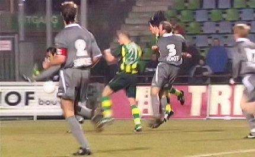

|
ADO
Den Haag - Roda JC (1-1) 18 maart 2006
|
Er is nog geen minuut gespeeld als Sergio deze niet te missen kans naast
het doel weet te werken.
Na een dubbele schaar en meer mooi passeerwerk speelt Cristiano de bal
op Sergio die de bal wederom naast het doel weet te werken.
Een diepte-pass van Kah bereikt Sonko die de doelman prachtig passeert:
0-1, (25').
Een fantastische beloning voor de door velen afgeschreven speler.
Prachtige voorzet van Sonko op Cristiano die de bal knullig naastglijdt.
Bodor ligt te suffen op de grasmat. Ook de rest van de defensie slaapt als
Rankovic de gelijkmaker kan inschieten: 1-1, (68').

Invaller Rudge krijgt de bal tegen zijn arm. Mols claimt een penalty maar
arbiter Haverkort wil daar niet aan.
Vincent Lachambre behoedt Roda voor een nieuwe tegentreffer door de bal
van de doellijn te koppen.
ADO werd naarmate de wedstrijd vorderde de gevaarlijkere ploeg.
Met de schrik vrij; het blijft 1-1. Door dit gelijkspel is Roda weer
een stap dichter bij de definitieve uitschakeling
voor deelname aan de play-offs beland. De
bekerwedstrijd tegen Ajax zal het
seizoen maken of breken!
© Koempels Pleasure Dome
|